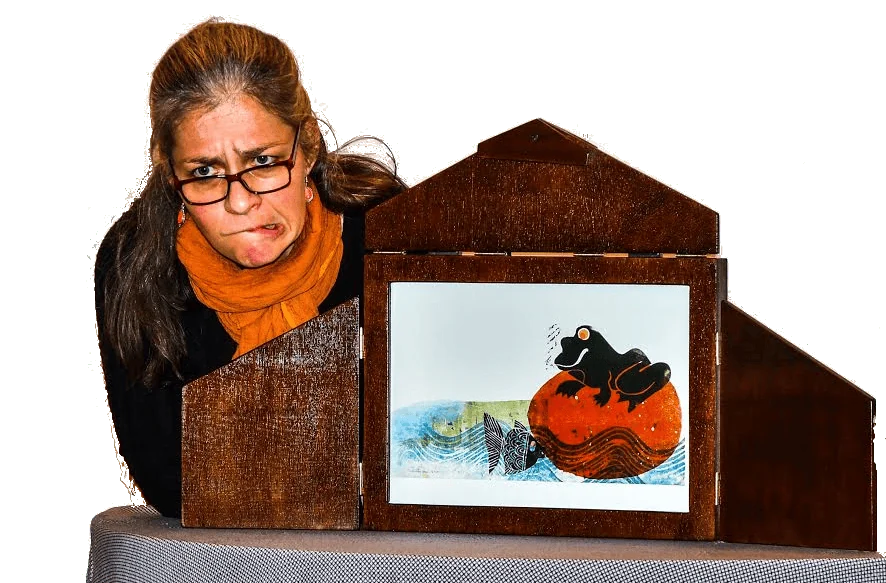
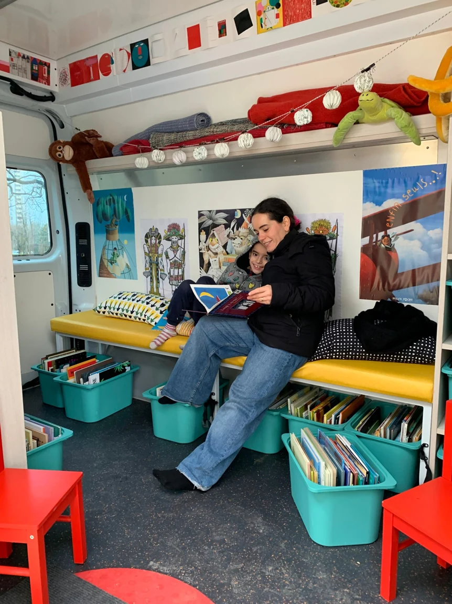

01 / Les actions
Lire ensemble.
Des rencontres autour des albums et du kamishibaï. Dans les structures d’accueil comme au pied d’un immeuble, chacun peut entrer dans le récit à son rythme.

La démarche
Des albums à portée de main
Les livres sont mis à disposition des enfants pour qu’ils puissent choisir, feuilleter et demander une lecture. Dans un petit groupe, je lis pour un enfant à la fois, pendant que les autres restent libres de s’approcher ou de poursuivre leur exploration.
Cette démarche, que j’ai découverte auprès de l’association A.C.C.E.S., commence dès la petite enfance. Avec les équipes sur place, j’observe ce qui se passe pendant les séances pour ajuster le choix des albums et la manière de les proposer.
Le théâtre d’images
Raconter avec le kamishibaï
Le kamishibaï met en scène des histoires illustrées dans un petit théâtre. Les images défilent pendant que la lectrice donne voix au récit. La séance laisse une place aux échanges et peut se poursuivre autour d’albums.
Cette proposition s’adresse à des enfants plus grands que les tout-petits. Elle ouvre un autre chemin vers les mots, les langues et les récits.

Les lectures nomades
Lire avec un camion
Le camion permet d’installer un coin lecture ouvert sur l’extérieur. Il transporte des albums jeunesse et le matériel pour accueillir les enfants et les adultes, dans un quartier, un village ou au cours d’une manifestation.
Les séances peuvent aussi servir de temps d’observation avec les professionnels présents, pour repérer ce qui aide un enfant à s’intéresser à un livre.

Contact
Imaginer une rencontre
Vous avez un lieu, un public ou une idée de projet ? Échangeons sur ce qui pourrait prendre forme ensemble.
Contacter Nathalie